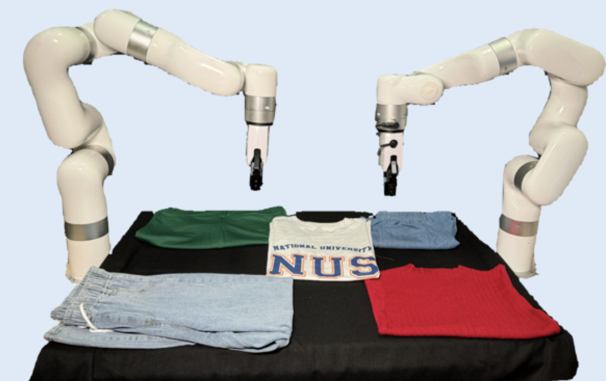

|
Jingxiang Guo | 郭京翔 I am a fourth-year undergraduate student majoring in Automation at Harbin Institute of Technology, Shenzhen. Currently, I am fortune to be a research assistant at National University of Singapore advised by Prof. Lin Shao. Previously, I was an intern at Harbin Institute of Technology, Shenzhen RLGroup advised by Prof. Yanjie Li. Email / CV / Github / Google Scholar / ORCID / IEEE Xpolre / WeChat
×

|

|
ResearchMy research interests lie in 🤖robot learning and 🦾dexterous manipulation. My long-term goal is to create true robotic life, pushing the boundaries of what’s possible with machines. I’m open to collaborations on robotics-related projects! Whether you’re a researcher looking for a partner , feel free to reach out to me👋. |

|
MASQ: Multi-Agent Reinforcement Learning for Single Quadruped Robot Locomotion
In submission to ICRA 2025 Website / arXiv / Code This paper introduces MASQ, a novel approach using multi-agent reinforcement learning (MARL) for single quadruped robot locomotion. By treating each leg as an independent agent, MASQ accelerates learning and boosts real-world robustness, surpassing traditional methods. |

|
$\mathcal{D(R,O)}$ Grasp: A Unified Representation of Robot and Object Interaction for Cross-Embodiment Dexterous Grasping
In submission to ICRA 2025 Website / arXiv / Code We introduce a novel representation, $\mathcal{D(R,O)}$ for dexterous grasping tasks. This interaction-centric formulation transcends conventional robot-centric and object-centric paradigms, facilitating robust generalization across diverse robotic hands and objects. |

|
Logarithmic Function Matters Policy Gradient Deep Reinforcement Learning
In submission to DAI 2024 arXiv / Code |

|
Multi-Agent Target Assignment and Path Finding for Intelligent Warehouse: A Cooperative Multi-Agent Deep Reinforcement Learning Perspective
In submission to RA-L arXiv / Code / Advertise |
 |
MetaFold: A Closed-loop Pipeline for Universal Clothing Folding via End-to-end Point Cloud Trajectory Generation
Website / arXiv / Code |

|
Momentum Prediction for Tennis Matches Based on Counter-Factual Analysis and Multi-LGBM
IEEE Xpolre / Code |

|
ECAPA-TDNN Embeddings for Speaker Recognition
IEEE Xpolre / Code |

|
Quick reversing device and quick track reversing device
National Patent Google Patents |
Award
|
Experience |

|
National University of Singapore, Singapore 2024.07 - nowResearch AssistantAdvisor: Prof. Lin Shao |

|
HTISZ Reinforcement Learning Group (RLG), China 2022.10 - 2024.06Research InternAdvisor: Prof. Yanjie Li |

|
Harbin Institute of Technology, Shenzhen, China 2021.09 - 2025.07Undergraduate Student |
|
Fell free to contact me if you have any problem.
|